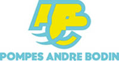
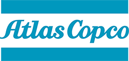
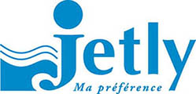

Revendeur de produits de qualité.
GONZALEZ Bobinage est distributeur de plusieurs entités.
Distributeur BODIN

Dernier fabricant français indépendant, l'entreprise BODIN est positionnée dans la conception et de la fabrication de Pompes pour l'Assainissement et l'Industrie agro-alimentaire.
Les pompes BODIN sont spécialisées dans la fabrication de pompes submersibles de relevage d'eaux usées destinées au marché de l'habitat et du collectif, pompes à hélice, sécatrices, ainsi que de grosses pompes à canaux.
Distributeur ATLAS COPCO France

La société Atlas Copco est spécialisée dans les systèmes de distrinution d'air comprimé, d'air respirable dans les milieux professionnels, ainsi que dans le traitement d'air ainsi que les pompes à vide.
Les produits Atlas Copco commercialisés par la société GONZALEZ Bobinage sont essentiellement des compresseurs d'air comprimé mais aussi des filtres à air comprimé, des colonnes de charbon, des sécheurs d'air, des réservoirs à air comprimé, des épurateurs de condensats, des pompes à vides pour l'industrie agro-alimentaire…
Pour toutes informations complémentaires sur les produits Atlas Copco, veuillez prendre contact avec
nous.
Distributeur JETLY

Depuis 1977, Jetly, spécialiste de la pompe, distribue l’ensemble des pompes de surface de marque DAB, BBC, réservoir à vessie VAREN.